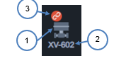
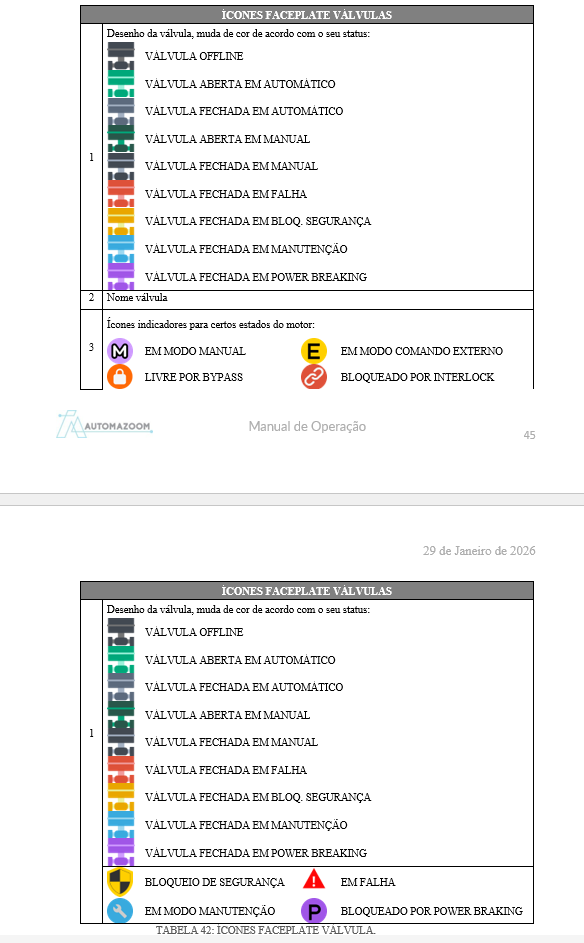
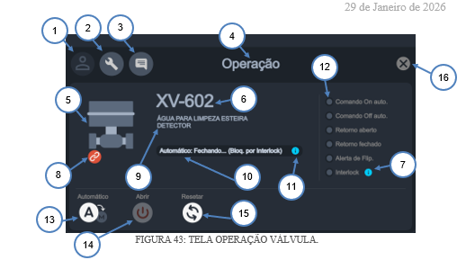
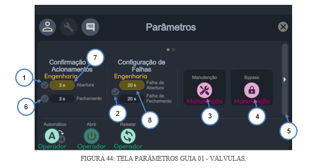
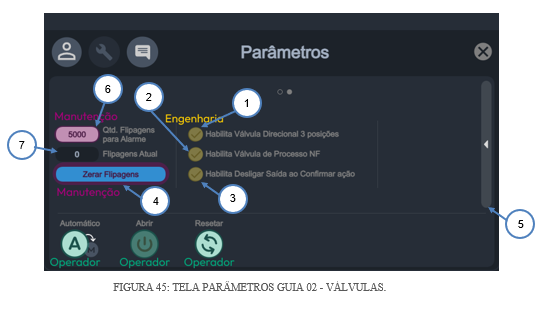
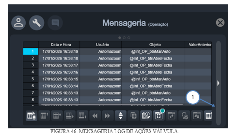
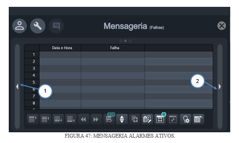
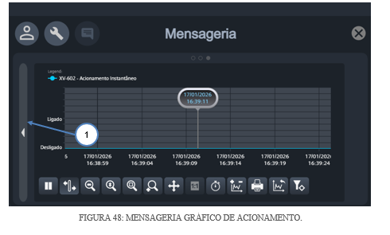
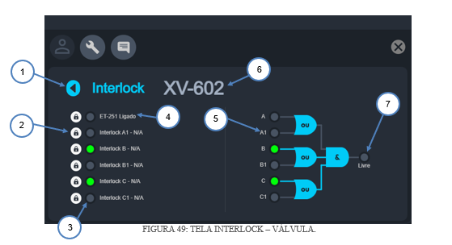
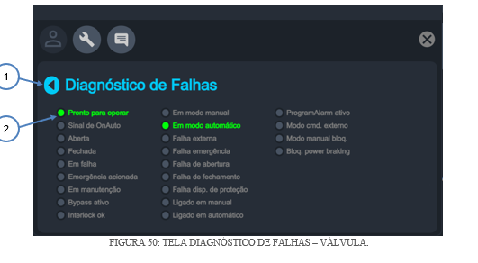

9.1.1 FACEPLATE
Cada válvula possui um painel com informações básicas de seu status, conforme apresentado na FIGURA 41. Ao clicar no painel, é possível acessar a tela de operação do equipamento.

ÍCONES FACEPLATE VÁLVULAS
| Nº | Descrição |
|---|---|
| 1 |
Desenho da válvula, que muda de cor conforme seu status:
|
| 2 | Nome da válvula. |
| 3 |
Indicadores de status:
|
TABELA 42: ÍCONES FACEPLATE VÁLVULA.

9.1.2 OPERAÇÃO
Na tela de operação é possível visualizar o status da válvula, alternar entre os modos manual e automático, abrir ou fechar a válvula, resetar falhas e acessar as demais telas.

| Nº | Descrição |
|---|---|
| 1 | Acessa a tela de operação. |
| 2 | Acessa a tela de parâmetros. |
| 3 | Acessa a tela de mensageria. |
| 4 | Nome da tela atual. |
| 5 | Desenho da válvula conforme seu status. |
| 6 | Nome/tag da válvula. |
| 7 | Acessa a tela de interlock. |
| 8 | Indicadores de status da válvula. |
| 9 | Descrição da válvula. |
| 10 | Status da válvula. |
| 11 | Acessa a tela de diagnóstico de falhas. |
| 12 | Indicadores dos status do painel resumido. |
| 13 | Seleciona o modo automático ou manual. |
| 14 | Comando para abrir ou fechar a válvula. |
| 15 | Reseta as falhas. |
| 16 | Fecha o pop-up. |
TABELA 43: ÍCONES OPERAÇÃO VÁLVULAS.
9.1.3 PARÂMETROS
A tela de parâmetros é destinada aos usuários de manutenção ou níveis superiores. Nela é possível configurar confirmações simuladas de abertura e fechamento, habilitar falhas e definir os tempos de resposta da válvula.
Também é possível ativar o modo manutenção e o bypass geral. Na segunda guia, são configurados os tipos de válvula e o contador de flipagens, que registra os ciclos de abertura e fechamento.
GUIA 01
| Nº | Descrição |
|---|---|
| 1 | Habilita a confirmação simulada de abertura. |
| 2 | Habilita a geração de falhas de acionamento. |
| 3 | Ativa o modo manutenção. |
| 4 | Ativa o modo livre por bypass. |
| 5 | Acessa a guia 02. |
| 6 | Habilita a confirmação simulada de fechamento. |
| 7 | Configura os tempos de abertura e fechamento simulados. |
| 8 | Configura os tempos para geração de falhas. |

GUIA 02

| Nº | Descrição |
|---|---|
| 1 | Configura a válvula como modelo de três posições. |
| 2 | Configura a válvula como normalmente aberta (NA). |
| 3 | Desliga a saída após a confirmação da abertura ou fechamento. |
| 4 | Zera o contador de flipagens. |
| 5 | Retorna à guia 01. |
| 6 | Configura o limite de flipagens para gerar alarmes. |
| 7 | Mostra a quantidade atual de flipagens. |
TABELA 45: ÍCONES TELA DE PARÂMETROS GUIA 02.
9.1.4 MENSAGERIA
A aba de mensageria das válvulas possui três telas: log de ações dos usuários, alarmes ativos e gráfico da quantidade de flipagens na última hora de operação.
LOG DE AÇÕES

| Nº | Descrição |
|---|---|
| 1 | Avança para a próxima guia. |
TABELA 46: ÍCONES TELA MENSAGERIA LOG DE AÇÕES.
ALARMES ATIVOS

| Nº | Descrição |
|---|---|
| 1 | Retorna à guia anterior. |
| 2 | Avança para a próxima guia. |
TABELA 47: ÍCONES TELA MENSAGERIA ALARMES ATIVOS.
GRÁFICO DE ACIONAMENTOS

| Nº | Descrição |
|---|---|
| 1 | Retorna à guia anterior. |
TABELA 48: ÍCONES TELA MENSAGERIA GRÁFICO DE ACIONAMENTOS.
9.1.5 INTERLOCK
A tela de interlock apresenta os status dos intertravamentos da válvula. Cada sinal possui um indicador que mostra se o interlock está ativo ou desativado. Quando todos os interlocks estão liberados, a indicação "LIVRE" é exibida.

| Nº | Descrição |
|---|---|
| 1 | Retorna à tela de operação. |
| 2 | Habilita o bypass individual de cada interlock. |
| 3 | Indica o status do interlock. |
| 4 | Descrição do interlock. |
| 5 | Segundo indicador de status do interlock. |
| 6 | Nome do equipamento. |
| 7 | Indica se a válvula está livre por interlock. |
TABELA 49: ÍCONES DA TELA DE INTERLOCK.
Voltar ao menu9.1.6 DIAGNÓSTICO DE FALHAS

| Nº | Descrição |
|---|---|
| 1 | Retorna à tela de operação. |
| 2 | Indica o status de ativo. |
TABELA 50: ÍCONES DA TELA DE DIAGNÓSTICO DE FALHAS.
Voltar ao menu